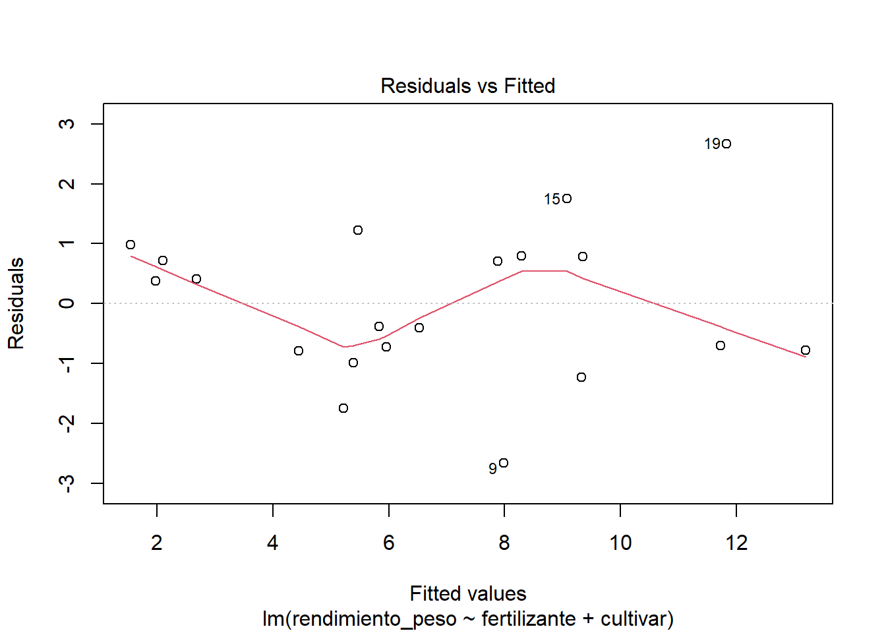
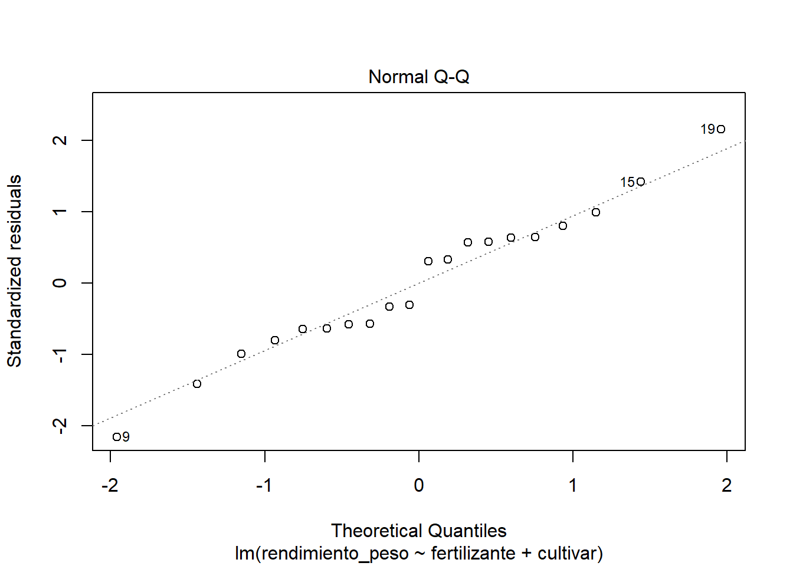
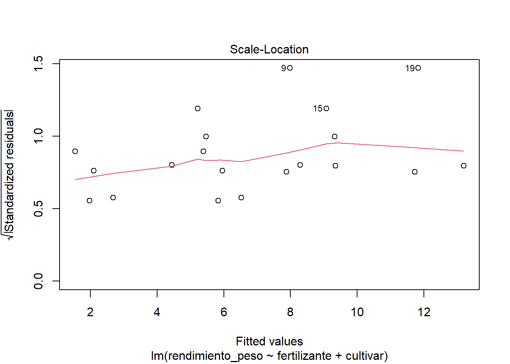

Ejemplo tomado de Crawley (1998). Glim for Ecologists. Oxford. UK.
Es un experimento en el que se midió el crecimiento (masa seca al cosechar = y) de plantas tratadas con 10 concentraciones diferentes de suplemento mineral como fertilizante, f. El experimento fue realizado con dos cultivares diferentes, g. Uno fue clonado de plantas de un ambiente árido y el otro de uno húmedo. Todas las plantas de cada tipo, sin restricciones, fueron asignadas aleatoriamente a los distintos niveles de fertilizante.
A veces hay archivos que contienen datos faltantes o perdidos. Podemos enfrentar eso con la función complete.cases() que revisa linea por linea el archivo y regresa “verdadero” si todas las columnas tienen datos válidos y “falso” si hay huecos. Esta lista de “verdaderos” y “falsos” la podemos usar para elegir que filas del archivo de datos están completas y así podemos eliminarlas del conjunto de datos que vamos a procesar.
Sobre los datos limpios, generamos la variable indicativa del tipo de ambiente del que se tomo la planta que se clonó.
Código
# En caso de que haya datos extra, elimino registros leidos como datos erróneosGLEX1 <- GLEX1[complete.cases(GLEX1), ]
gráfica de masa seca contra fertilizante mineral - sin diferenciar tratamientos
Veamos los datos en una gráfica simple. La función plot hace cosas distintas según el tipo de datos que le demos. Para generar la gráfica simple que queremos aquí, conviene que los valores de fertilizante sean interpretados como valores numéricos. Esto lo logramos con la funnción as.numeric
Para explorar mejor los datos podemos marcar en la gráfica las obsevaciones que pertenecen a cada condición. En este caso, te propongo poner el nombre que le dimos al “tratamiento”.
Gráfica de masa seca contra fertilizante mineral diferenciando por genotipos
Ahora podemos realizar el análisis estadístico mediante modelos. Hagamos un análisis con el enfoque “tradicional” en R. Lo primero que haremos es configurar el entorno de análisis, esto significa elegir el tipo de contrastes que queremos operar al ajustar modelos reparametrizados. Haremos esto con opción contrasts en la función options(contrasts=...)
Para asegurarnos de que los estimadores del modelo toman el primer nivel como referencia hay que usar el modo de reparametrización “treatment”. Hay otras formas de reparametrización, como podrás ver en la ayuda de contr.treatment.
aj1 <-lm (rendimiento_peso ~1, data = GLEX1)summary(aj1)
Call:
lm(formula = rendimiento_peso ~ 1, data = GLEX1)
Residuals:
Min 1Q Median 3Q Max
-4.432 -3.185 -1.006 2.555 7.711
Coefficients:
Estimate Std. Error t value Pr(>|t|)
(Intercept) 6.7912 0.8067 8.419 7.79e-08 ***
---
Signif. codes: 0 '***' 0.001 '**' 0.01 '*' 0.05 '.' 0.1 ' ' 1
Residual standard error: 3.608 on 19 degrees of freedom
Código
# Agregamos el efecto del fertilizanteaj2 <-update(aj1, .~ . + fertilizante)anova(aj2)
Analysis of Variance Table
Response: rendimiento_peso
Df Sum Sq Mean Sq F value Pr(>F)
fertilizante 9 142.75 15.861 1.5174 0.2622
Residuals 10 104.53 10.453
Nótese que el número de niveles de fertilizante es 10, así que los grados de libertad son 10-1=9. De modo semejante el número de observaciones es 20, así que los grados de libertad del residuo descuenta los grados de libertad del fertilizante y 1 (por la estimación de la media general): 20 - 9 - 1 = 10
Código
# agregamos el cultivaraj3 <-update(aj2, .~ . + cultivar)anova(aj3)
Analysis of Variance Table
Response: rendimiento_peso
Df Sum Sq Mean Sq F value Pr(>F)
fertilizante 9 142.747 15.861 4.6953 0.015392 *
cultivar 1 74.125 74.125 21.9434 0.001145 **
Residuals 9 30.402 3.378
---
Signif. codes: 0 '***' 0.001 '**' 0.01 '*' 0.05 '.' 0.1 ' ' 1
Podemos intentar hacer un modelo completo, es decir con todos los posibles factores y combinaciones que pueden producirse. Sin embargo este modelo consume todos los grados de liberta (observacione) con que contamos pues cada tratamiento fue ensayado una sola vez en este experimento. De todos modos lo podemos intentar para ver que nos dice R.
Código
# agregamos una pendiente diferente para cada genotipoaj4 <-update(aj3, .~ . + cultivar:fertilizante)anova(aj4)
Warning in anova.lm(aj4): ANOVA F-tests on an essentially perfect fit are
unreliable
Analysis of Variance Table
Response: rendimiento_peso
Df Sum Sq Mean Sq F value Pr(>F)
fertilizante 9 142.747 15.861 NaN NaN
cultivar 1 74.125 74.125 NaN NaN
fertilizante:cultivar 9 30.402 3.378 NaN NaN
Residuals 0 0.000 NaN
La scuencia de ajustes produce estos cambios en devianza
Código
anova(aj1, aj2, aj3)
Analysis of Variance Table
Model 1: rendimiento_peso ~ 1
Model 2: rendimiento_peso ~ fertilizante
Model 3: rendimiento_peso ~ fertilizante + cultivar
Res.Df RSS Df Sum of Sq F Pr(>F)
1 19 247.274
2 10 104.527 9 142.747 4.6953 0.015392 *
3 9 30.402 1 74.125 21.9434 0.001145 **
---
Signif. codes: 0 '***' 0.001 '**' 0.01 '*' 0.05 '.' 0.1 ' ' 1
Modelo mínimo adecuado
estos resultados sugieren que el modelo 3 es mínimo adecuado resumen del modelo mínimo adecuado
Como un ejercicio haz el cálculo de los valores de y, a parir de los valores estimados por el modelo. Lo puedes hacer a mano, con ayuda de una calculadora del super, en Excel o equivalente, o quizás con ayuda de R mismo. En este último caso te doy como pista la función coef, con la que tendrás acceso a los coeficientes del modelo.
¿Podrías escribir un programa/función en R para calcular los valores esperados?
Para comprender con exactitud que es lo que hace exactamente R al ajustar un modelo de regresión o ANDEVA, como este podemos usar la función model.matrix() aplicada al modelo que nos interese analizar. En este caso lo ejemplificaré con el modelo mínimo adecuado aj3. Así podemos ver en acción el uso de las formas de reparametrización
Como hemos visto. La valoración del modelos mínimo adecuado es una declaración de una posible hipótesis alternativa, la más cercana a la muestra que, en esta ocasión obtuvimos. Sin embargo, no hay garantía de ningún tipo de que en otra oportunidad los estimadores serán los mismos. Esto es un recordatorio de que la famosa p nos es en lo que debemos centrar nuestras esperanzas. El asunto es la reflexión sobre las hipótesis alternativas, es decir, las que realmente interesan al investigador y ojalá haga los más explícitas posibles. Una manera de ver el ámbito de estados alternativos del sistema la tenemos cuando visualizamos los intervalos de confianza que nuestro modelo mínimo adecuado produce. En el sitio RPub pueden encontrar ayuda para utilizar R en el análisis de sus datos, aquí encontraran un texto sobre intervalos de confianza. No deja de ser un ejercicio exploratorio y algo subjetivo, pero también potencialmente productivo para acercarnos a comprender mejor el comportamiento del sistema de nuestro interés.
Un primer conjunto de intervalos de confianza son los asociados con los parámetros del modelo, es decir, la gama de valores de los coeficientes de regresión que podríamos esperar tener en el ajuste del modelo. A continuación les muestro como podemos obtener, con la función confint estos intervalos en R.
Otro intervalo de confianza de interés es el que podemos asociar con lo que puede predecir el modelo. En R este intervalo de confianza lo podemos obtener así:
¿Qé se te ocurre para utilizar en tu reporte de resultados este tipo de intervalos de confianza?
crítica al modelo y recursos diagnósticos
Código
plot(aj3)



Ejemplo Proteina y alcaloide
GLEX11 (p. 138) Proteína y alcaloide. Se midió el incremento en longitud (mm) de larvas de insectos. Se hicieron mediciones después de dos semanas de alimentarlas con una dieta artificial bajo condiciones controladas de temperatura. Uno de los factores fue la cantidad de proteína en la dieta, con tres niveles (bajo, medio, alto). El otro factor es la presencia o ausencia de un alcaloide. Cada tratamiento se repitió cuatro veces. La asignación de los tratamientos a los insectos se hizo en forma aleatoria entre todos los especímenes disponibles.
En este ejemplo usaremos la biblioteca readxl para leer los datos directamente desde un libro de Excel. Esta biblioteca define la función read_excel que lee los datos y entrega una tabla. Hay que notar que esta tabla no es un data.frame, es una tibble que es una versión actual de data.frame y como tal tiene algunas peculiaridades para el manejo de su contenido.
Los datos contienen información cualitativa, así que necesitamos definir esas piezas de información como factores. Aprovecharemos para experimentar con los factores de tipo “ordenado”. Esta variante de factor aprovecha el contenido seminumérico que pudiéramos tener en alguna variable. En este caso lo haremos así para el contenido de proteína.
Código
# Uso la función "ordered" que genera factores ordenados, # útil para aprovechar datos "semicuantitativos" y probar polinomios# Enfoque antiguo con data.frame#GLEX11$proteina <- ordered(GLEX11$proteina, c(1,2,3), # c("bajo", "medio", "alto"))##GLEX11$alcaloide <-factor(GLEX11$alcaloide, c(1,2), c("ausente", "presente"))## Enfoque actual con tibbleGLEX11 <- GLEX11 %>%mutate(proteina =ordered(proteina, c(1,2,3), c("bajo", "medio", "alto")),alcaloide =factor(alcaloide, c(1,2), c("ausente", "presente")))
exploración de medias
Siempre es conveniente hacer una revisión previa de los datos y considerar los patrones que apreciamos en ellos como fuente de ideas o simplemente para verificar que no haya errores de algún tipo.
Código
## Enfoque antiguo con data.frame# Para simplificar el acceso a los datos uso la función attach#attach(GLEX11)#aggregate(list(talla=talla), list(proteina=proteina), mean)#aggregate(list(talla=talla), list(alcaloide=alcaloide),mean)#tapply(talla, list(proteina, alcaloide), mean)# Con un tibble es más práctico hacer estoGLEX11 %>%group_by(proteina) %>%summarize(promedio =mean(talla, na.rm=TRUE))
# A tibble: 3 × 2
proteina promedio
<ord> <dbl>
1 bajo 5.5
2 medio 5.25
3 alto 4.25
larvas.nulo <-lm(talla ~1, data=GLEX11)# defino una simple función que extrae devianza y df de un ajuste y lo despliga# mediante la función "cat"devianza <-function(x) { cat("devianza=", deviance(x), "\ndf=",x$df.residual,"\n")}# devianza del modelo nulodevianza(larvas.nulo)
Esto es equivalente a una búsqueda, algo exploratoria, para dar respuesta a la pregunta: ¿Son necesarios todos los niveles de los factores?
Código
summary(larvas.completo)
Call:
lm(formula = talla ~ proteina + alcaloide + proteina:alcaloide,
data = GLEX11)
Residuals:
Min 1Q Median 3Q Max
-1.500 -1.000 0.000 0.625 2.000
Coefficients:
Estimate Std. Error t value Pr(>|t|)
(Intercept) 4.5000 0.3600 12.499 2.61e-10 ***
proteina.L 0.7071 0.6236 1.134 0.27172
proteina.Q 1.2247 0.6236 1.964 0.06517 .
alcaloidepresente 1.0000 0.5092 1.964 0.06517 .
proteina.L:alcaloidepresente -3.1820 0.8819 -3.608 0.00201 **
proteina.Q:alcaloidepresente -3.0619 0.8819 -3.472 0.00272 **
---
Signif. codes: 0 '***' 0.001 '**' 0.01 '*' 0.05 '.' 0.1 ' ' 1
Residual standard error: 1.247 on 18 degrees of freedom
Multiple R-squared: 0.65, Adjusted R-squared: 0.5528
F-statistic: 6.686 on 5 and 18 DF, p-value: 0.001103
Código
# Generación de un factor re-codificado: tomaré: bame = bajo y medio, alto=alto# Por supuesto hay que considerar que esta fusión tenga sentido biológico.# Así podemos recodificar el factor proteína.GLEX11$proteinaBM <- GLEX11$proteina levels(GLEX11$proteinaBM) <-c("bame", "bame", "alto") # cuidar el orden
nuevo ajuste de modelo completo con el factor proteina recodificado.
Código
larvas.protBM <-lm(talla ~ proteinaBM * alcaloide, data = GLEX11) summary(larvas.protBM)
Call:
lm(formula = talla ~ proteinaBM * alcaloide, data = GLEX11)
Residuals:
Min 1Q Median 3Q Max
-2 -1 0 1 2
Coefficients:
Estimate Std. Error t value Pr(>|t|)
(Intercept) 4.7500 0.3781 12.562 6.03e-11 ***
proteinaBM.L 1.0607 0.5347 1.984 0.0612 .
alcaloidepresente 0.1250 0.5347 0.234 0.8175
proteinaBM.L:alcaloidepresente -3.7123 0.7562 -4.909 8.47e-05 ***
---
Signif. codes: 0 '***' 0.001 '**' 0.01 '*' 0.05 '.' 0.1 ' ' 1
Residual standard error: 1.235 on 20 degrees of freedom
Multiple R-squared: 0.6188, Adjusted R-squared: 0.5616
F-statistic: 10.82 on 3 and 20 DF, p-value: 0.000194
¿qué significancia tiene este cambio en el modelo?
Código
anova(larvas.protBM,larvas.completo)
Analysis of Variance Table
Model 1: talla ~ proteinaBM * alcaloide
Model 2: talla ~ proteina + alcaloide + proteina:alcaloide
Res.Df RSS Df Sum of Sq F Pr(>F)
1 20 30.5
2 18 28.0 2 2.5 0.8036 0.4632